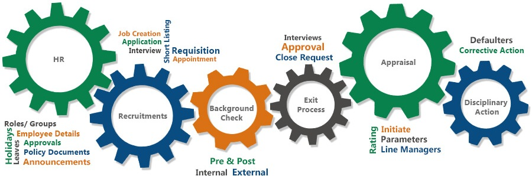
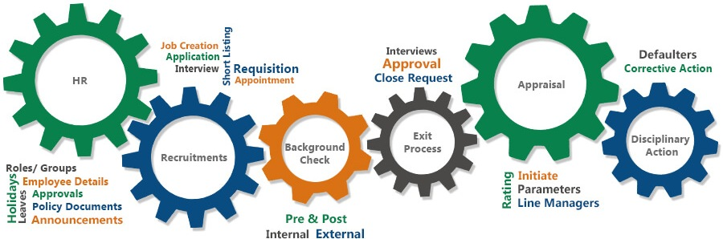

Human resources are inarguably an organization's most valuable asset. For an organization to excel with other organization human resources plays a crucial role. The role of HR includes the following:
- 1.Identifying the right talent for the right role
- 2.Proper compensation and benefits
- 3.Managing employee motivations, grievances and feelings
- 4.Managing exits
Human resources have been using analytics for years. However, the collection, processing and analysis of data has been largely manual, and given the nature of human resources dynamics. Moreover, in certain circumstances, people sometimes default to their emotions, biases; prejudices etc. and this could result in inefficient decisions being made. This can have a negative impact on the organization’s growth and return on investment. Also, managing and analyzing such vast amounts of HR data manually or semi-manually is time consuming and prone to mistakes. This is the age of big data. To manage employees, you need data on:
- 1.Employee attitudes and feelings
- 2.Credentials or qualifications
- 3.Employee views toward policies
- 4.Compensation and benefits trends
- 5.Relevant external developments such as the job market and rival organizations and their impact on your employees
That adds up to a humongous data volume arriving every moment. Manual management is simply ill-equipped to handle it. This is where Machine Learning comes in. Machine Learning consistently accept, store and process such data volumes and provide relevant and actionable insights in the form of simple analytics.